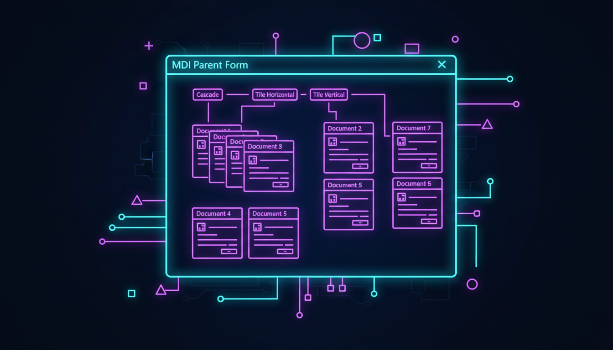

Батьківські та дочірні форми, меню, активізація

// Батьківська форма
public ref class ParentForm : public Form {
public:
ParentForm() {
this->IsMdiContainer = true;
this->Text = "MDI Додаток";
this->Size = Size(800, 600);
// Меню
MenuStrip^ menu = gcnew MenuStrip();
ToolStripMenuItem^ mWindow = gcnew ToolStripMenuItem("Вікно");
mWindow->DropDownItems->Add("Нове вікно", nullptr,
gcnew EventHandler(this, &ParentForm::OnNewWindow));
mWindow->DropDownItems->Add(gcnew ToolStripSeparator());
mWindow->DropDownItems->Add("Каскад", nullptr,
gcnew EventHandler(this, &ParentForm::OnCascade));
mWindow->DropDownItems->Add("Плитки", nullptr,
gcnew EventHandler(this, &ParentForm::OnTile));
menu->Items->Add(mWindow);
this->Controls->Add(menu);
}
void OnNewWindow(Object^ sender, EventArgs^ e) {
ChildForm^ child = gcnew ChildForm();
child->MdiParent = this;
child->Text = "Документ " + this->MdiChildren->Length;
child->Show();
}
void OnCascade(Object^ sender, EventArgs^ e) {
this->LayoutMdi(MdiLayout::Cascade);
}
void OnTile(Object^ sender, EventArgs^ e) {
this->LayoutMdi(MdiLayout::TileHorizontal);
}
};